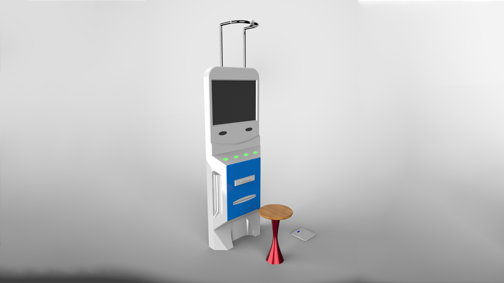
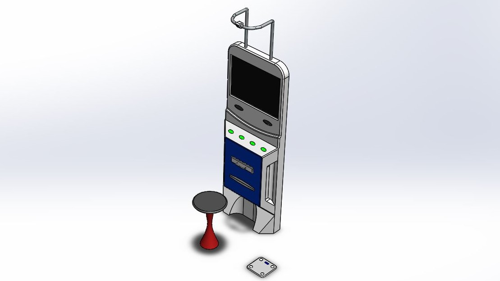
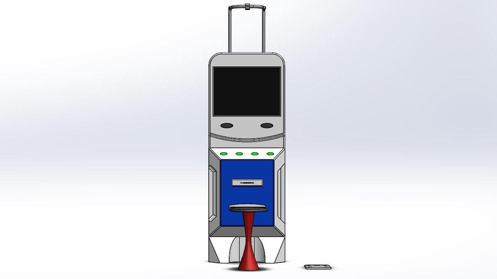
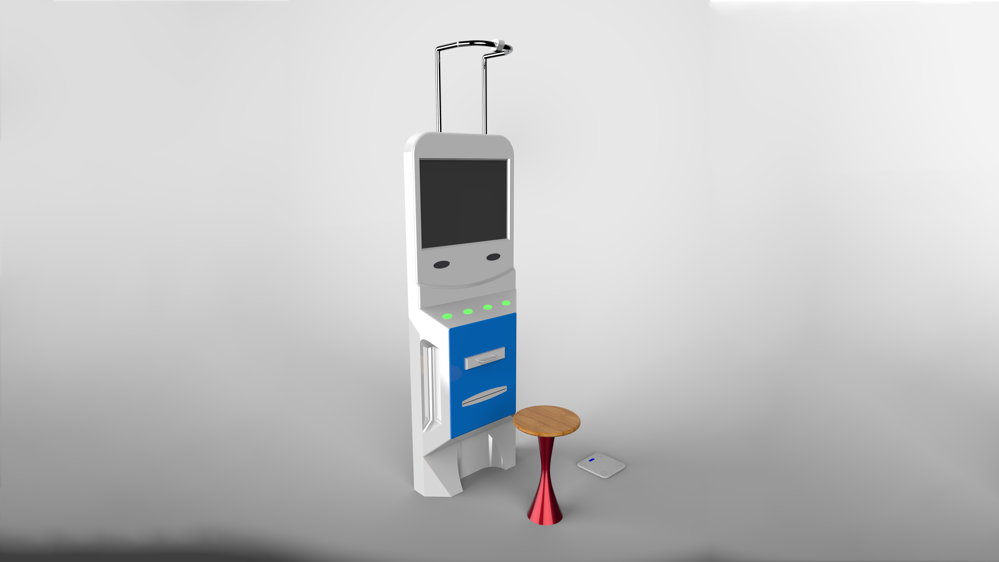
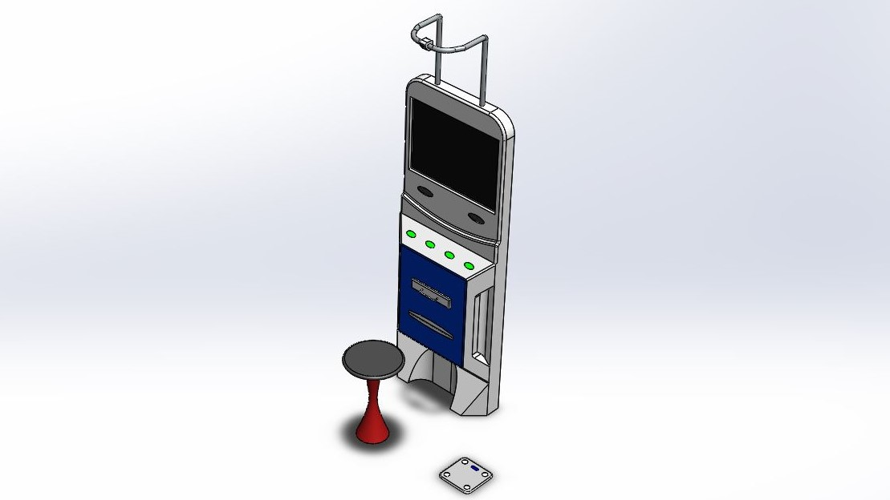
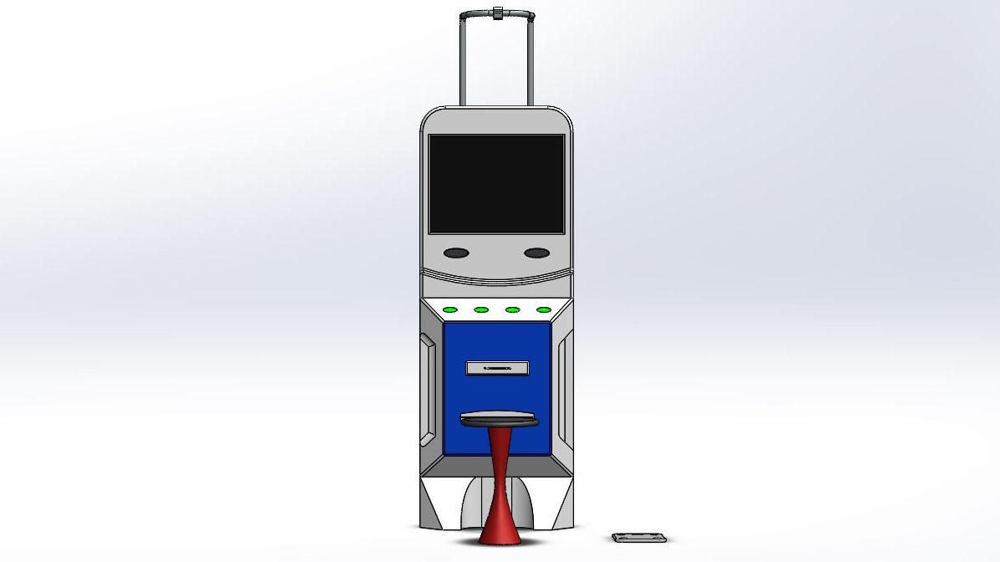

Problem
Full body health checkup in hospitals is time-consuming and makes the patient reach many places for each test. Reduction of this time and difficulty was the prime requirement.
User
Patients visiting Multi-speciality Hospitals for a general health checkup.
My Role
The solution concept was to make a kiosk where the user can utilize the HMI to complete the health checkup process. My role was to design the concept to visualize the final product, where the electronics were under prototyping stage.
Design Process
To fulfil the main requirement of making the user feel comfortable during the test, a kiosk which guides the user to complete all the tests by themselves was designed. Also, the kiosk was designed visually appealing that the user shouldn’t have the fear of using a machine for their health checkup. The final concept design was designed using SolidWorks and rendered using Keyshot. The colour selection was based on the existing colours used in hospitals which makes people feel safe in an environment. To make the kiosk aesthetical as well as looking tough, painted steel sheet metal was chosen as the material.